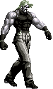
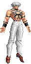
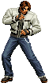
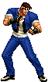
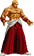

李仙森的Mugen空间
强凶人物，都是基于已有的人物的修修改改
Bilibili QQ:18708242
Email:18708242@qq.com
人物AI暂时停止公开，等完成之后会连主程序一起打包公开（因为是宽屏，所以所有人物要做一些特效的适配），以下是简单的进度的更新
主程序和血条
人物合理化
- 常规K、P投触发距离10，没有无敌帧
- 所有普通攻击优先级均为8
- 无受击回气
- 普通AB不免投，全程30-33F，结尾留7F非无敌时间
- 起跳免投，落地免投
- 所有人物受击框正常化，防止对面断连
人物列表
以下人物是初步预定，随时会变动，如作者反对或者有新的人选。因为很多人物都是待定，所以欢迎通过B站私信或者QQ邮件等方式推荐。
标有无AI的并非是没有AI，但是基本是对人向AI，不能充分发挥人物性能
| Preview | Name | Status | Videos | Description |
|---|---|---|---|---|
| 音巢队 | ||||
| 古利查力度 Krizalid |
Nyankoror人物 lees AI/改造完成 |
经理 | 人物增加BC，禁用一些原创必杀，02UM系统，XI火花（这个后面会改成02UM火花） | |
| 克隆零 Clone Zero |
Men'sClub人物 无AI |
人物火花、打击音效缺失，很多击中的状态也不对，BC系统貌似实现不完全，需要大量改动 | ||
 |
真零 Original Zero |
咸鱼氏人物(人物自带AI十分优秀) lees AI完成 |
真零 | 02UM原作还原向，解禁了克隆零招式 |
| 伯恩斯坦家族 | ||||
| 萝丝 Rose |
randy y ale&KamranBernstein人物 lees AI/改造待完善 |
增加了一个搬运的动作，完成了初版AI，需要继续完善 | ||
 |
少爷 Adel |
Jin, Jerzy人物 lees AI/改造完成 |
增加BC，完善演出及击倒状态，增加超搬运/瞬移等招式，性能弱化 | |
|  | 卢卡尔 Rugal |
fxm508氏人物 lees AI完成 |
社长 | 02UM原作还原向，接近空中剪刀脚，增加身后bug波策略 |
| 神 | ||||
 |
伊格尼兹 Igniz |
Eagrose氏人物，自带优秀AI | 无须多说 | |
|  | 大蛇 Orochi |
流花绯月氏人物，自带优秀AI | 97原作向 | |
| 斋祀 Saiki |
mugeningan& glasses氏人物 无AI |
低清斋祀，很棒的人物 | ||
| 大蛇一队 | ||||
 |
薇丝 Vice |
OrochiKOF97 & KamranBernstein人物 无AI |
很多移植和原创的招式，暂定这个人物 | |
 |
麦卓 Mature |
|
非原作向 | |
 |
高尼兹 Goanitz |
小草莓氏人物，自带生猛AI | 可能需要弱化一下 | |
| 日本队 | ||||
 |
红丸 Benimaru |
LASH氏 无AI |
自测基本招式都有，缺少超杀火花，击退计算也不对，准备增加BC，修改成02UM风格 | |
| 大门 Daimon |
Ahuron氏 无AI |
02UM原作向 | ||
|  | 白衣草薙京 Kyo |
lees斑鸠氏人物改造，AI待完善 | 差不多10点前斑鸠氏人物的改造，混合系统，包含京、克隆京和里草的绝大部分招式 | |
| XI京庵队 | ||||
|  | 真吾 Shingo |
Vans & JINB人物 无AI |
02UM原作向 | |
| 八神 Iori |
情殇氏，自带优秀AI | 02UM风，包含八神历代招式及暴走模式，问题同里草 | ||
| 皮衣草薙京 Kyo |
情殇氏，自带优秀AI | 02UM风，招式齐全且包含顶点超杀，问题同里草 | ||
| K队 | ||||
 |
库拉 Kula |
小草莓氏人物，自带优秀AI | 原创系统 | |
| 薇普 Whip |
小草莓氏，自带优秀AI | 原创系统 | ||
| K' K Dash |
Vans & JINB lees edit |
K | 02UM风，招式齐全，增加叶樱K派生，修改XIII Neo MAX超杀特效 | |
| 阿修队 | ||||
| 伊丽莎白 Elisabeth |
Fervicante (Edit by Vergil Kusanagi [Ariel Gonzalez Ordaz]) 无AI |
原创系统，包含很多位移招式（且全程无敌，需要调整），但是缺少进攻招式，计划从别的人物移植过来，也有很大可能换个伊丽莎白，lees AI预定 | ||
| 罗兹威尔 Rozwel |
第二届拳皇世界最终Boss原型，会重新基于最原始版本进行改造，lees AI 100%预定 | |||
| 阿修 Ash |
Jin & VELKA人物 无AI |
未深入了解，毕竟也是主角，lees AI预定，除非有其他更合适的人物 | ||
| 少女队 | ||||
| 藤堂香澄 Kasumi |
Kasumi氏人物 口水氏AI |
02UM原作还原向 | ||
| 四条雏子 Hinako |
Mondregon氏人物 lees AI |
四条雏子 | 02UM原作还原向，修复大量人物的Bug，增加AI，空振条件和人物速度等需要再完善下 | |
 |
李香绯 Xiangfei |
Vans氏人物 lees AI |
02UM原作还原向，AI完成 | |
| 女性格斗家队 | ||||
| 琼 King |
Ambasa氏人物 诚治氏AI |
02UM风格，混合系统 | ||
 |
不知火舞 Mai |
gdwb126氏人物 lees AI待完善 |
不知火舞三更 | 02UM/狼印风格可选，包含援助，招式齐全 |
| 神乐千鹤 Chizuru |
Vans氏人物 无AI |
02UM原创，还没具体调查性能和特色 | ||
| 超能力队 | ||||
| 雅典娜 Athena |
GURI氏人物 无AI |
暂定这个可以变身的雅典娜，小草莓雅典娜投技距离过远且不好削弱投技（是其主要起手技能） | ||
| 椎拳崇 Kensou |
暂时没做细致调查，估计是在02UM两个模式和混合模式的选一个 | |||
 |
包 Bao |
Mondregon氏人物 lees AI/改造基本完成 |
02UM风格，移植一些必杀超杀，AI基本完成，细节待完善，攻击速度，击中状态，隐藏的攻击效果等等需要还原02UM | |
| 龙虎之拳队 | ||||
| 坂崎琢磨 Takuma |
KoopaKoot氏人物 无AI |
02UM原作向，准备写个ex模式的 | ||
 |
罗伯特 Robert |
Vans人物 lees AI |
里萝卜 | 02UM ex罗伯特 AI基本完成 |
| 坂崎良 Ryo |
KoopaKoot+JINB氏人物 无AI |
原人物非两个模式，可能会融合一下，顺便把02UM Max超杀天地霸煌拳击中打晕的效果实现一下 | ||
| 韩国队 | ||||
| 李梅 May Lee |
ahuron氏人物 无AI |
02UM原作向,猴子和大猪的确是找不到合适的人物，就她吧 | ||
 |
全勋 Jhun |
Vans人物 无AI |
02UM原作还原向，这个需要好好构思，可能放在比较后面写 | |
 |
金家潘 Kim |
gdwb126氏 lees AI待完善 |
金家潘三更 | 02UM风格，包含了历代大部分招式，BC断连以及很多立回问题需要解决 |
| 怒队 | ||||
| 拉尔炮 Ralf |
Men'sClub氏人物 无AI |
02UM风格，目前手感有点飘，BC条显示的和02UM不一样，需要进一步调查 | ||
| 克拉克 Clark |
Men'sClub氏人物 无AI |
02UM风格，目前手感有点飘，BC条显示的和02UM不一样，需要进一步调查 | ||
| 丽安娜 Leona |
Strong FS & Shirou Satoru 无AI |
XIV的造型，计划增加02UM的系统以及尝试移植一些02UM的招式，工作量比较大 | ||
| 南镇恶霸队 | ||||
| 比利 Billy |
KoopaKoot氏人物 无AI |
02UM风格 | ||
| 山崎龙二 Yamazaki |
H氏人物 无AI |
缺失打击火花和音效，不知道BC系统是否完善 | ||
|  | 噩梦吉斯 Geese |
Ambasa氏人物 诚治氏AI |
性能有点过分，招式几乎都带无敌且无敌时间过长，各种远距离0F投和当身，各种追加，任何形式摸到敌人都能造成不低于6割的伤害。目前当沙包用，后面可能换成口水AI的02UM噩梦吉斯 | |
| 特工队 | ||||
| 玛丽 Mary |
KoopaKoot氏人物 无AI |
02UM原作向 | ||
| 温妮莎 Vanessa |
ahuron氏人物 四月(B站ID 月下夜不语)AI |
貌似不允许和小草莓人物对战，还在询问中，相信可以解决 | ||
| 赛斯 Seth |
Nyankoro氏人物 无AI |
02UM原作向，很喜欢的一个拳皇人物 | ||
| 饿狼传说队 | ||||
| 东丈 Joe |
David Demianoff氏人物Zadkiel Mugen改变，Zadkiel增加了很多超杀 无AI |
魔改版，没找到合适的，暂定这个，如果找到原作向的还是用原作向 | ||
| 安迪 Andy |
zzzasd氏人物 无AI |
02UM原作向，缺音效和特效 | ||
| 特瑞 Terry |
斑鸠氏人物，自带优秀AI | 斑鸠系统？意外的很能打，不知道是不是上了 | ||
| 大蛇二队 | ||||
| 克里斯 Chris |
Ahuron氏人物 无AI |
02UM原作向，duagi氏AI过于老旧，思考中... | ||
| 夏尔米 Shermie |
Ahuron氏人物 无AI |
02UM原作向，duagi氏AI过于老旧，思考中... | ||
| 七枷社 Yashiro |
Ahuron氏人物 无AI |
02UM原作向，duagi氏AI过于老旧，思考中... | ||
| 未分组，比较优秀的拳皇人物 | ||||
| 洛克 Rock |
斑鸠氏，自带优秀AI | 02UM系统，人物很不错，狼印主角，不过斑鸠AI过于友情，应该需要增强下AI | ||
| 里草 Kusanagi |
情殇氏，自带优秀AI |
|
||
 |
蓝K Bloo |
tutaya氏，自带优秀AI | 无须多说，友情且很能打 | |
| 牙刀 Gato |
K.O.D氏人物 无AI |
招式比较齐全，XI系统 | ||